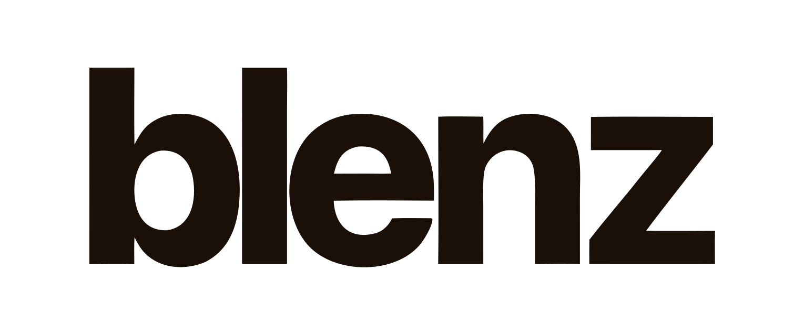
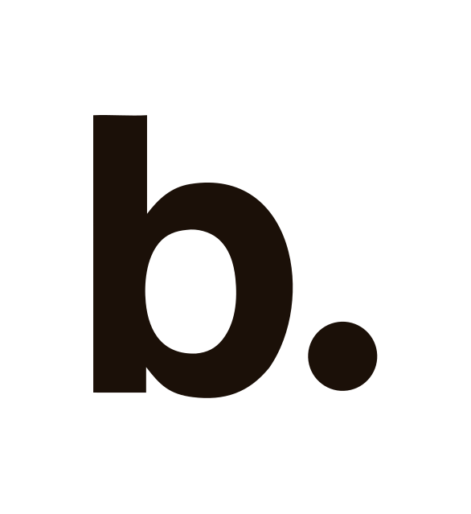
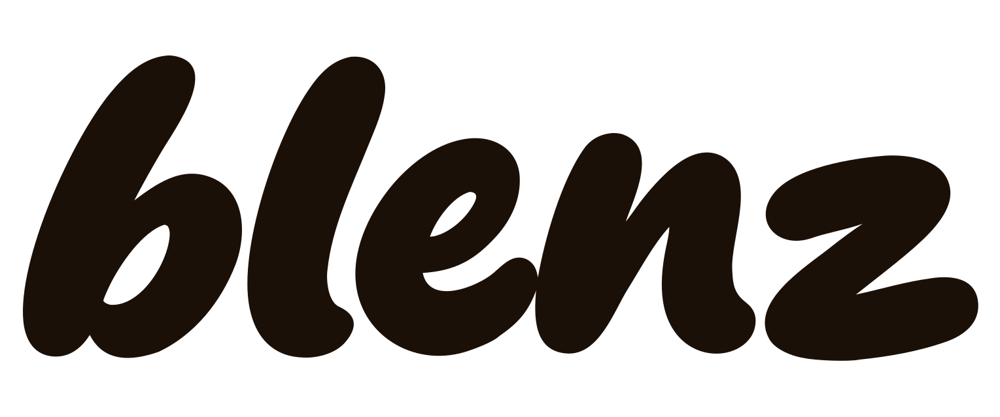
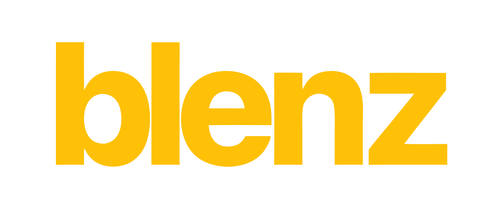

01 · Transparent Background



02 · Primary Wordmark
Bricolage Grotesque
i
Font Family
The typeface for the Blenz wordmark.
Free and open-source — geometric, editorial, on-brand.
In Figma: Select the text
→ Right panel → Font field
→ Type Bricolage Grotesque
Missing? Download from Google Fonts, install it, restart Figma.
·
ExtraBold 800
i
Font Weight
Sets how thick the letters are.
800 = ExtraBold — the heaviest approved weight for the wordmark.
In Figma: Select the text
→ Right panel → style dropdown (next to font name)
→ Choose ExtraBold
See a number field instead? Type 800.
·
opsz 48
i
Optical Size (opsz)
A variable font axis that controls letterform shape.
At 48 the stems are straight and geometric — the approved look. Lower values add curves and change the logo's character. Always lock it to 48.
In Figma: Select the text
→ Right panel → weight dropdown → Variable
→ Find Optical Size
→ Uncheck "Set automatically"
→ Set to 48
·
Tracking −6.5%
i
Letter Spacing (Tracking)
Controls the space between every letter.
−6.5% pulls them tighter, giving the wordmark its dense, confident feel.
In Figma: Select the text
→ Right panel → Text section
→ Letter spacing field (AV icon)
→ Enter −65
Figma uses per-mille (‰), so −6.5% = −65. That's the only value you need.

03 · b. Single-Letter Mark
Bricolage Grotesque
i
Font Family
Same typeface as the primary wordmark — only the "b" character is used.
In Figma: Select the text
→ Right panel → Font field
→ Type Bricolage Grotesque
·
ExtraBold 800
i
Font Weight
800 ExtraBold — same as the primary wordmark. Never use a lighter weight for the mark.
In Figma: Select the text
→ Style dropdown → ExtraBold, or type 800
·
opsz 48
i
Optical Size (opsz)
Lock to 48 — keeps the stem geometry consistent with the full wordmark when used together.
In Figma: Select the text
→ Weight dropdown → Variable
→ Optical Size → uncheck "Set automatically"
→ Set to 48
·
Dot: 0.18em circle
i
The Dot
A filled circle sized at 18% of the font size, placed 7% to the right of the b.
At 120px font size: dot diameter = 21.6px, gap = 8.4px.
In Figma, draw an ellipse with equal W/H, fill matching the text colour, and align it to the baseline.

04 · Rounded Wordmark
Bricolage Grotesque
i
Font Family
Same typeface as the primary wordmark — Bricolage Grotesque.
The rounded feel comes from a different axis setting, not a different font.
In Figma: Select the text
→ Right panel → Font field
→ Type Bricolage Grotesque
·
ExtraBold 800
i
Font Weight
Same weight as the primary wordmark — 800 ExtraBold.
Weight stays locked at 800 across all logo variants.
In Figma: Select the text
→ Right panel → style dropdown
→ Choose ExtraBold or type 800
·
opsz 10–12
i
Optical Size — What makes it rounded
This is the only setting that differs from the primary wordmark.
Primary uses opsz 48 — straight, geometric stems.
Rounded uses opsz 10–12 — the variable font's low end, which curves the terminals and softens the letterforms.
Do not mix: never set opsz 10–12 on the primary, and never set opsz 48 on the rounded.
In Figma: Select the text
→ Right panel → weight dropdown → Variable
→ Find Optical Size
→ Uncheck "Set automatically"
→ Set to 10 or 12
·
Tracking −6.5%
i
Letter Spacing (Tracking)
Same tight tracking as the primary wordmark — keeps both versions visually consistent in width and density.
−6.5% = −65 in Figma's per-mille field.
In Figma: Select the text
→ Right panel → Letter spacing field (AV icon)
→ Enter −65
·
Seasonal / Campaign use only
i
Usage Rule
The rounded wordmark is a secondary variant — it is not a replacement for the primary.
Approved contexts: limited drops, seasonal campaigns, community-facing moments where the brand wants to feel warmer and less formal.
Default to the primary (opsz 48) for all standard brand touchpoints.
Alternative use — limited drops, seasonal campaigns, and moments where the brand wants to feel a little warmer. Not a replacement for the primary wordmark.